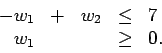
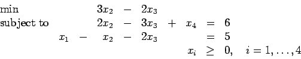

First Exam, Friday, September 19, 2003.
You may use any result from your notes or a homework that is clearly stated.
You may use one sheet of handwritten notes, but no other sources.
The exam consists of six questions, and lasts one hundred minutes.
- 1.
- (20 points; 5 points for each part)
Suppose an optimization problem in decision variables w1 and w2 has constraints

- (a)
- Devise a minimizing objective function for which the model has a unique
optimal solution, and demonstrate that fact by solving the model graphically.
- (b)
- Devise a minimizing objective function for which the model has multiple
optimal solutions, and demonstrate that fact by solving the model graphically.
- (c)
- Devise a minimizing objective function for which the model is unbounded,
and demonstrate that fact by solving the model graphically.
- (d)
- Put your problem from part (b) into standard form.
- 2.
- (15 points)
Formulate a linear programming problem to find a vector satisfying
and having the maximum of
as small as possible.
- 3.
- (15 points)
Jill van Rensselaer is taking courses in operations research, economics,
statistics, and data structures.
She has 40 study hours to prepare for her finals and wishes to
divide her time to improve her grades as much as possible.
Naturally, her favorite course is operations research, so she will
spend as much time on it as on any other course.
Still, she believes up to 15 hours of study could be useful in any of the
courses, with each hour on operations research increasing her grade
by 2%, each hour on economics yielding 4%, each on statistics producing
1%, and each on data structures adding 2%.
Form a linear program to help Jill optimize her studying time.
- 4.
- (15 points)
Perform one simplex pivot in the following tableau:
- 5.
- (15 points)
Why can you conclude that the following problem has an unbounded optimal value?
What is the corresponding simplex direction?

- 6.
- (20 points)
The following linear program has multiple optimal solutions.
- (a)
- (5 points)
Give an optimal solution to the problem.
- (b)
- (5 points)
Find another optimal solution for the problem.
- (c)
- (10 points)
Graph the problem in an appropriate two dimensional space, and label
the set of optimal solutions.
John E. Mitchell
2004-09-28